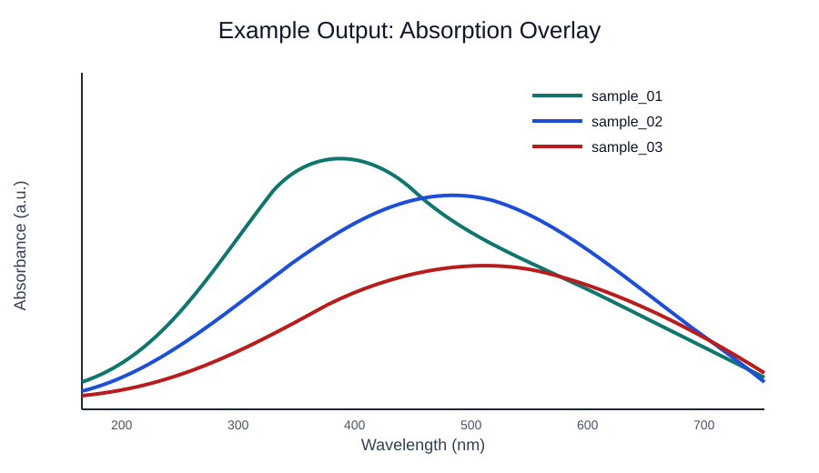
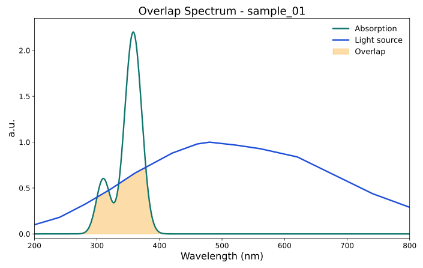

Overview
Two input families are treated as equal first-class citizens and can be mixed freely in the same run:
- Theoretical — Gaussian TD-DFT
.out/.logfiles. - Experimental — tabular spectra as CSV (
.csv), Excel workbook (.xlsx), or legacy Excel (.xls), with multi-sheet and multi-series selection.
- Always computes both broadening methods (
gaussian,lorentzian). - Evaluates each sample against multiple light sources and exports ranked descriptors.
Step-by-Step (Conda)
- Create environment and activate it.
conda env create -f environment.yml
conda activate overlap-calculator- Install the package.
pip install -e .- Put your `.out` and/or `.csv/.xlsx/.xls` files into `input/files`.
- Generate normalized input JSON.
overlap-calculator generate-input --files-dir input/files --out input/input.json- Run analysis.
overlap-calculator analyze --input input/input.json --out output- Inspect outputs under `output/tables` and `output/plots`.
Step-by-Step (venv)
- Create and activate venv.
python -m venv .venv
# Linux/macOS
source .venv/bin/activate
# Windows PowerShell
.venv\Scripts\Activate.ps1
# Windows CMD
.venv\Scripts\activate.bat- Install package, generate input, and analyze.
pip install -e .
overlap-calculator generate-input --files-dir input/files --out input/input.json
overlap-calculator analyze --input input/input.json --out outputStep-by-Step (API)
- Start API server.
python -m overlap_calculator.api.app- Send multipart request with one or more `files` entries.
curl -X POST http://localhost:8000/analyze -F "files=@input/files/sample_td.out" -F "files=@input/files/experimental.xlsx" -F "plot_dpi=400" -F "ranking_outputs=true" --output analysis_outputs.zip- Optionally pass
sigma_ev, grid bounds,concentration_m,path_cm,default_light_sources,light_source_files,plot_dpi, andranking_outputs. - For multi-sheet Excel uploads, pass
sheet_overridesas a JSON object keyed by the original filename when you need to force a specific sheet:-F 'sheet_overrides={"dye_panel.xlsx":"raw"}' - Receive
analysis_outputs.zip.
Step-by-Step (Docker API)
The Docker image listens on port 8000 inside the container. Both
docker run and docker compose publish it on host port
8080, so the native Flask instance (port 8000) and the docker
instance (port 8080) can run side by side.
- Build image.
docker build -t overlap-calculator .- Run container — host port 8080 mapped to the container's port
8000.
docker run --name overlap-calculator -p 8080:8000 overlap-calculator
curl http://localhost:8080/health- Or use the bundled
docker-compose.ymlfor restart policy +/healthhealthcheck — it uses the same 8080 host port:
docker compose up -d
curl http://localhost:8080/health- Send API requests against
http://localhost:8080/analyze(same payload as the native API on8000).
Input Types
A single input/files/ directory can hold any mix of the
supported formats; generate-input auto-discovers each
of them and writes one unified manifest.
Theoretical (.out / .log)
Gaussian TD-DFT outputs. The TD route and Excited State
lines are parsed to reconstruct the absorption spectrum from
oscillator strengths.
Experimental — CSV (.csv)
One wavelength column + one or more numeric signal columns.
wavelength_nm,sample_A,sample_B
300,0.12,0.08
310,0.15,0.10
320,0.18,0.14Experimental — Excel (.xlsx / .xls)
The same column layout as the CSV form, stored as an Excel
workbook. The first row is the header; any numeric columns beside
the wavelength axis are treated as independent samples.
Multi-sheet workbooks are fully supported. generate-input
selects the first analyzable sheet automatically; use the
sheet_name field in a manifest entry to force a sheet
(in hand-written manifests, omit or null reads the first sheet):
{
"input_type": "experimental",
"sample_id": "channel_A",
"source_path": "files/dye_panel.xlsx",
"series_name": "channel_A",
"sheet_name": "raw"
}
Accepted wavelength-column aliases (case-insensitive):
wavelength, wavelength_nm,
lambda, wl, nm. Each signal
column is interpreted as absorbance A(λ).
Sample IDs
The sample_id column in every results table and plot filename
is derived automatically by generate-input:
-
Theoretical (
.out) — if the Gaussian route contains a%chk=<name>.chkline, the checkpoint stem is used. This keeps the human-meaningful molecule label even when the raw files are queue-system artefacts such asslurm-5473089.out.
If no%chk=B1_td.chk → sample_id = "B1_td"%chkline is present, the.outfile stem is used as a fallback. -
Experimental — one manifest entry per numeric
series column, with
sample_id = "<series_name>"(the series column name itself, soCoumarin_1rather than a long file-stem prefix).
If you author input.json by hand and leave sample_id
blank, the same resolution rule is applied at analysis time.
CLI Options
overlap-calculator analyze --input input/input.json --out output --sigma-ev 0.3 --wl-min 200 --wl-max 800 --num-points 10000 --concentration-m 1e-5 --path-cm 1.0 --default-light-sources AM15G,LEDB1,LEDB2,LEDB3,LEDB4,CIEFL10 --light-source-file input/custom_light_1.csv --plot-outputs --plot-dpi 400 --ranking-outputsGaussian and Lorentzian broadenings are both computed every run and
appear side-by-side as gaussian_* / lorentzian_*
columns in results.csv with delta_* differences.
TIFF plots default to 400 dpi. Use --plot-dpi 600
when larger publication exports are needed.
Ranking outputs (ranking_by_light_source__<metric>.* and
ranking_by_sample__<metric>.*, plus matching bar charts under
plots/ranking/) are emitted by default for all four metric
variants — gaussian/lorentzian ×
absorbed_fraction/shape_overlap —
so the choice of "intensity-weighted absorbed fraction" vs.
"intensity-independent shape overlap" can be made downstream.
Disable with --no-ranking-outputs.
Output Checklist
- Open `output/tables/results.csv` for all raw rows.
- Open `output/tables/descriptor_summary.csv` for the global flat ranking.
- `results.csv` is wide format: one row per `(sample, light)` pair with `gaussian_*`, `lorentzian_*`, and `delta_*` columns side-by-side.
- For grouped rankings, open the per-metric files
output/tables/ranking_by_light_source__<metric>.{csv,json,xlsx}(samples ordered within each light source) andoutput/tables/ranking_by_sample__<metric>.{csv,json,xlsx}(light sources ordered within each sample), where<metric>is one ofgaussian_absorbed_fraction,lorentzian_absorbed_fraction,gaussian_shape_overlap,lorentzian_shape_overlap. - If available, inspect `output/tables/skipped_inputs.csv`.
- Inspect TIFF plots under `output/plots/*`:
absorption/<sample>__absolute.tiffand..__normalized.tiff— Gaussian + Lorentzian α(λ) together.light_source/<light>.tiff— per light source spectrum.overlap/<sample>__<light>__combined__absolute.tiffand..__combined__normalized.tiff— both broadenings together.overlap/<sample>__<light>__gaussian__{absolute,normalized}.tiffand the same forlorentzian— one TIFF per broadening.overlays/absorptance_overlay__<method>__{absolute,normalized}.tiff— multi-sample overlays.ranking/by_light_source/<metric>/<light>.tiff— bar chart ranking samples for each light source.ranking/by_sample/<metric>/<sample>.tiff— bar chart ranking light sources for each sample.
- Every overlap TIFF shades the geometric overlap area
min(α, Î)(the integrand ofshape_overlapin the normalised panel), so the figure and the reported numerical metric are visually identical. - Ranking bar charts annotate each bar with its numerical metric value and embed the metric name in the y-axis label, so the figure is self-describing.
- Legends are placed below the axes on all plots.
- Plots are 400 dpi by default; CLI
--plot-dpiand APIplot_dpioverride the TIFF resolution. - To skip the ranking outputs (tables and bar charts) entirely, pass
--no-ranking-outputson the CLI orranking_outputs=falseon the API.
Important columns in results.*:
molar_absorptivity_max(peakepsiloninM^-1 cm^-1, theoretical rows only)absorptance_max(peak Beer-Lambert absorptance at the referencec*L)absorbed_flux(integrated absorbed intensity)absorbed_fraction(dimensionless fraction of incident flux that is absorbed)shape_overlap(dimensionless spectral-shape comparator)reference_concentration_molar,reference_path_cm(Beer-Lambert reference)absorption_unit,light_source_unit,absorbed_flux_unit
Units
- Theoretical absorption is stored as Beer-Lambert
absorptance(dimensionless, in[0, 1]) derived fromepsilon(lambda)inM^-1 cm^-1at the referencec*L. - Experimental absorption is treated as user-provided absorbance and converted to absorptance the same way (no Beer-Lambert reference used).
AM15Gis treated asW m^-2 nm^-1.LEDB*andCIEFL10are treated as relative spectra.absorbed_flux_unitisW m^-2for AM15G, orrelative_integralfor relative sources.
Physics
Extinction spectrum from TD-DFT oscillator strengths:
nu_i [cm^-1] = 1e7 / lambda_i[nm]sigma [cm^-1] = sigma_ev * 8065.544- Gaussian:
g_i(nu) = exp(-(nu - nu_i)^2 / (2 sigma^2)) / (sigma sqrt(2 pi)) - Lorentzian:
l_i(nu) = (sigma / pi) / ((nu - nu_i)^2 + sigma^2) epsilon(lambda) [M^-1 cm^-1] = 2.315e8 * sum_i f_i * profile_i(nu(lambda))
Beer-Lambert absorptance:
A(lambda) = epsilon(lambda) * c * Lalpha(lambda) = 1 - 10^(-A(lambda))
Light-overlap metrics:
absorbed_flux = integral alpha(lambda) * I(lambda) d lambdalight_flux_total = integral I(lambda) d lambdaabsorbed_fraction = absorbed_flux / light_flux_totalshape_overlap = integral alpha_norm(lambda) * I_norm(lambda) d lambda / integral I_norm(lambda) d lambda
Example Plots
Absorption Overlay

Molecule-Light Overlap

Troubleshooting
- No output files: inspect `output/tables/skipped_inputs.*` and logs.
- CLI mismatch: run `pip install -e .` in the active environment.
- Plot export is too large: retry with a lower
--plot-dpivalue or use--no-plot-outputsfor table-only runs. - Environment conflicts: use only one environment at a time (Conda or venv).